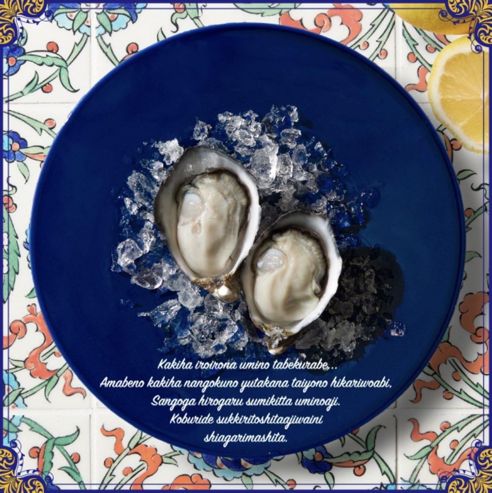

次回の開催
これまでの開催
この会の牡蠣

徳島県産 あまべ牡蠣
徳島県最南端・海陽町の澄んだ海で、「シングルシードバスケット養殖」で育てられた小粒なプレミアムオイスター。ふっくらとした厚みと、すっきりとした余韻が特徴です。
写真提供：リブル（reblue-k.com）
どんな会？
- 牡蠣は徳島県産「あまべ牡蠣」を使います。
- 牡蠣は自分で剥きます。ナイフ・手袋を用意し、剥き方からご説明します。
- まずはそのまま、次に定番の調味料、最後に変わり種と、少しずつ味の変化を試します。
- 「牡蠣メモ」に ◎○△ をつけて、最後に「今日のいちばん」を発表します。
- ちょっとしたお料理とワインつき。ワインの持ち込みも歓迎です。
調味料ガイド
日本・欧州・アジアなど各地の調味料、組み合わせ、評価の仕方をまとめています。
生牡蠣の調味料・薬味・酒類アイデア一覧 →
生牡蠣の調味料・薬味・酒類アイデア一覧 →